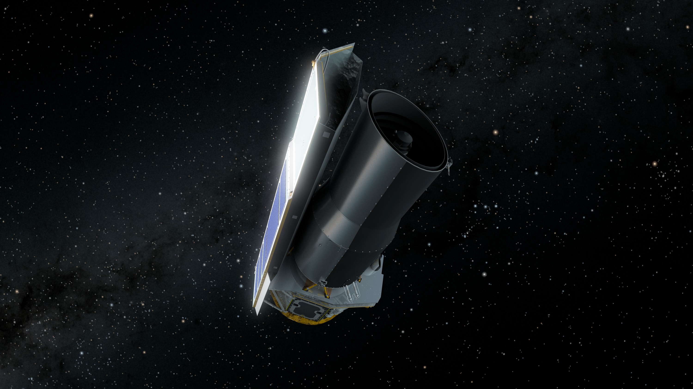

NASA/JPL-Caltech/R. Hurt (IPAC)
This website offers a guided journey to discover two major nebulae within the Milky Way: the Eagle Nebula and the Helix Nebula. These celestial objects are key to understanding how our Solar System was born and how it will eventually die. This exploration is made possible through the vision of the Spitzer Space Telescope; its infrared technology allows us to peer through cosmic dust, leading to extraordinary discoveries.

NASA/JPL-Caltech/R. Hurt (IPAC)